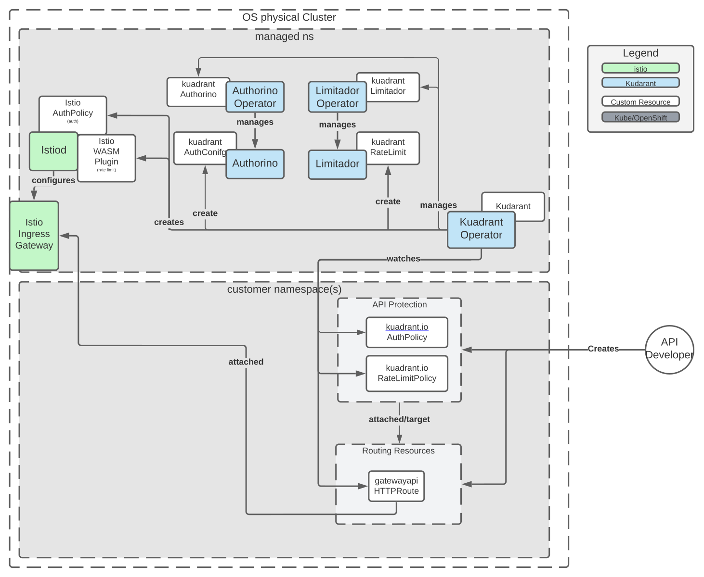

Kuadrant Operator¶


The Operator to install and manage the lifecycle of the Kuadrant components deployments.
Overview¶
Kuadrant is a re-architecture of API Management using Cloud Native concepts and separating the components to be less coupled, more reusable and leverage the underlying kubernetes platform. It aims to deliver a smooth experience to providers and consumers of applications & services when it comes to rate limiting, authentication, authorization, discoverability, change management, usage contracts, insights, etc.
Kuadrant aims to produce a set of loosely coupled functionalities built directly on top of Kubernetes. Furthermore, it only strives to provide what Kubernetes doesn’t offer out of the box, i.e. Kuadrant won’t be designing a new Gateway/proxy, instead it will opt to connect with what’s there and what’s being developed (think Envoy, Istio, GatewayAPI).
Kuadrant is a system of cloud-native k8s components that grows as users’ needs grow.
- From simple protection of a Service (via AuthN) that is used by teammates working on the same cluster, or “sibling” services, up to AuthZ of users using OIDC plus custom policies.
- From no rate-limiting to rate-limiting for global service protection on to rate-limiting by users/plans
Architecture¶
Kuadrant relies on the Gateway API and one Gateway API provider being installed on the cluster. Currently only Istio and EnvoyGateway are supported to operate the cluster ingress gateway to provide API management with authentication (authN), authorization (authZ) and rate limiting capabilities.
Kuadrant components¶
| CRD | Description |
|---|---|
| Control Plane | The control plane takes the customer desired configuration (declaratively as kubernetes custom resources) as input and ensures all components are configured to obey customer's desired behavior. This repository contains the source code of the kuadrant control plane |
| Kuadrant Operator | A Kubernetes Operator to manage the lifecycle of the kuadrant deployment |
| Authorino | The AuthN/AuthZ enforcer. As the external istio authorizer (envoy external authorization serving gRPC service) |
| Limitador | The external rate limiting service. It exposes a gRPC service implementing the Envoy Rate Limit protocol (v3) |
| Authorino Operator | A Kubernetes Operator to manage Authorino instances |
| Limitador Operator | A Kubernetes Operator to manage Limitador instances |
| DNS Operator | A Kubernetes Operator to manage DNS records in external providers |
Provided APIs¶
The kuadrant control plane owns the following Custom Resource Definitions, CRDs:
| CRD | Description | Example |
|---|---|---|
| AuthPolicy CRD [doc] [reference] | Enable AuthN and AuthZ based access control on workloads | AuthPolicy CR |
| RateLimitPolicy CRD [doc] [reference] | Enable access control on workloads based on HTTP rate limiting | RateLimitPolicy CR |
| DNSPolicy CRD [doc] [reference] | Enable DNS management | DNSPolicy CR |
| TLSPolicy CRD [doc] [reference] | Enable TLS management | TLSPolicy CR |
Additionally, Kuadrant provides the following CRDs
| CRD | Owner | Description | Example |
|---|---|---|---|
| Kuadrant CRD | Kuadrant Operator | Represents an instance of kuadrant | Kuadrant CR |
| Limitador CRD | Limitador Operator | Represents an instance of Limitador | Limitador CR |
| Authorino CRD | Authorino Operator | Represents an instance of Authorino | Authorino CR |

Getting started¶
Pre-requisites¶
- Istio or Envoy Gateway is installed in the cluster. Otherwise, refer to the Istio getting started guide or EnvoyGateway getting started guide.
- Kubernetes Gateway API is installed in the cluster.
- cert-manager is installed in the cluster. Otherwise, refer to the cert-manager installation guide.
Installing Kuadrant¶
Installing Kuadrant is a two-step procedure. Firstly, install the Kuadrant Operator and secondly, request a Kuadrant instance by creating a Kuadrant custom resource.
1. Install the Kuadrant Operator¶
The Kuadrant Operator is available in public community operator catalogs, such as the Kubernetes OperatorHub.io and the Openshift Container Platform and OKD OperatorHub.
Kubernetes
The operator is available from OperatorHub.io. Just go to the linked page and follow installation steps (or just run these two commands):
# Install Operator Lifecycle Manager (OLM), a tool to help manage the operators running on your cluster.
curl -sL https://github.com/operator-framework/operator-lifecycle-manager/releases/download/v0.23.1/install.sh | bash -s v0.23.1
# Install the operator by running the following command:
kubectl create -f https://operatorhub.io/install/kuadrant-operator.yaml
Openshift
The operator is available from the Openshift Console OperatorHub. Just follow installation steps choosing the "Kuadrant Operator" from the catalog:

2. Request a Kuadrant instance¶
Create the namespace:
Apply the Kuadrant custom resource:
kubectl -n kuadrant apply -f - <<EOF
---
apiVersion: kuadrant.io/v1beta1
kind: Kuadrant
metadata:
name: kuadrant-sample
spec: {}
EOF
Protect your service¶
If you are an API Provider¶
- Deploy the service/API to be protected ("Upstream")
- Expose the service/API using the kubernetes Gateway API, ie HTTPRoute object.
- Write and apply the Kuadrant's RateLimitPolicy and/or AuthPolicy custom resources targeting the HTTPRoute resource to have your API protected.
If you are a Cluster Operator¶
- (Optionally) deploy ingress gateway using the Gateway resource.
- Write and apply the Kuadrant's RateLimitPolicy and/or AuthPolicy custom resources targeting the Gateway resource to have your gateway traffic protected.
User guides¶
The user guides section of the docs gathers several use-cases as well as the instructions to implement them using kuadrant.
- Simple Rate Limiting for Application Developers
- Authenticated Rate Limiting for Application Developers
- Gateway Rate Limiting for Cluster Operators
- Authenticated Rate Limiting with JWTs and Kubernetes RBAC
Kuadrant Rate Limiting¶
Documentation¶
Docs can be found on the Kuadrant website.
Contributing¶
The Development guide describes how to build the kuadrant operator and how to test your changes before submitting a patch or opening a PR.
Join us on the #kuadrant channel in the Kubernetes Slack workspace, for live discussions about the roadmap and more.
Licensing¶
This software is licensed under the Apache 2.0 license.
See the LICENSE and NOTICE files that should have been provided along with this software for details.